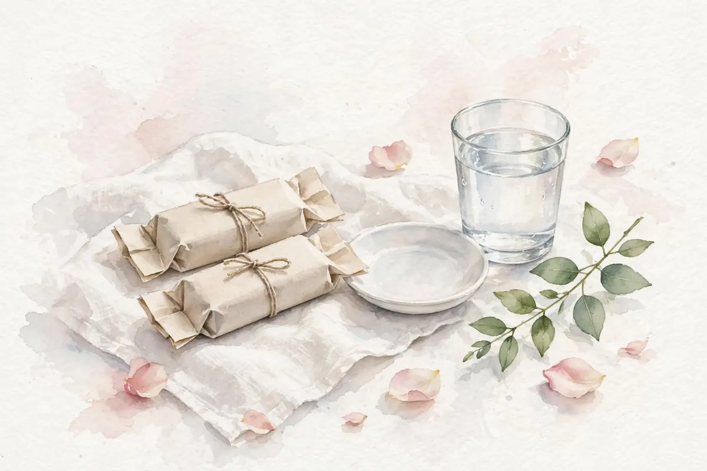

トップ ＞ インナーケア・サプリ ＞ バータイプの表示の読み方：1本あたり・1箱あたりの見分け方
バータイプの表示の読み方：1本あたり・1箱あたりの見分け方

バータイプの食品は、1本ずつ個包装になっていて、持ち運びしやすい形です。ただ、パッケージの表示は「1本あたり」なのか「1箱あたり」なのか、商品によって書き方が違います。この記事では、バータイプの表示の読み方を、現役セラピストの視点で整理します。特定の商品や成分をおすすめするものではありません。
まず、単位の前提を確認する
バータイプの表示で最初に見るのは、数字の単位の前提です。栄養成分表示には、「1本あたり」「1箱あたり」「100gあたり」など、単位の基準が書かれています。同じ数字でも、基準が違えば意味がまったく変わります。私は、まずこの「あたり」の部分を探すようにしています。
1本の重さは商品によって違います。1本30gのものもあれば、1本50gのものもあります。「1本あたり」と書かれていても、1本の重さが違えば、比べるときは重さをそろえて見る必要があります。1箱に何本入っているかも、パッケージの表面や側面に書かれています。1箱あたりの表示は、「1本あたり×本数」で計算されていることが多いので、1本あたりの数字と見比べると、表示の読み方がつかみやすくなります。
原材料名の並びと、栄養成分表示
食品の表示では、原材料名は使用した量の多い順に並べる決まりになっています。バータイプでも同じで、原材料名の並びを見ると、その商品の中で何が主役なのかが大まかに分かります。気になる原材料が、並びの前の方にあるか、後ろの方にあるかを確認するのが、私の買い物のときの習慣です。
栄養成分表示では、エネルギー、たんぱく質、脂質、炭水化物、食塩相当量といった基本の項目が並んでいます。バータイプは1本が1食分に近い形なので、1本あたりの数字を、そのまま1回分の目安として読むことができます。ただし、表示の単位が「1箱あたり」や「100gあたり」になっている場合は、1本あたりに直してから読むようにしてください。
1箱あたり表示の見落としやすい点
1箱あたりの表示で見落としやすいのが、「1箱＝何本か」という前提です。箱の本数は、6本入りのものもあれば、12本入りのものもあります。1箱あたりの数字だけを見て比べると、本数の違う商品同士では比較になりません。比べるときは、まず1本あたりに直すのが基本です。
また、箱買いをするときは、1本あたりの価格ではなく、1箱の価格と本数から「1本あたりいくらか」を計算して見るのも、買い物のときの目安になります。個包装の1本は、持ち運びには便利ですが、箱の中身が何本入っているかを確認しないまま買うと、思っていた本数と違うことがあります。箱の側面の表示も、買う前に目を通しておくといいでしょう。
持ち運びと保管の表示
バータイプは、持ち運びを前提にした商品が多いため、保管の表示も確認しておきたいところです。「高温多湿を避けて保存する」「直射日光を避ける」といった表示が、パッケージの裏面や側面に書かれています。夏場の車内や、暖房の近くに置きっぱなしにすると、表示の保管条件から離れてしまいます。
賞味期限の表示も、1本ずつの個包装と、箱の両方に書かれていることがあります。箱から出して持ち歩く場合は、個包装の期限表示を確認する習慣があると安心です。開封したものは、その場で食べるのが基本です。持ち歩くときは、個包装のままバッグに入れ、箱から出した分は早めに使い切るようにしています。
バータイプの食品は食品であり、身体への作用を断定するものではありません。この記事は表示の読み方の案内です。体調に不安がある方、医薬品を服用中の方は、医師・薬剤師等の専門家にご相談ください。
アレルギー表示の確認も、バータイプでは大切です。特定原材料などのアレルギー表示は、パッケージの裏面にまとめて書かれています。原材料名の並びとあわせて、アレルギーのある方は、買う前にこの欄を目で確認する習慣があると安心です。個包装の1本にも、表示が書かれていることが多いので、箱から出して持ち歩く場合でも、1本の表示を見れば確認できます。
セラフィナ「1本あたりか、1箱あたりか。数字の前に、まず『あたり』を読むのがコツだね」